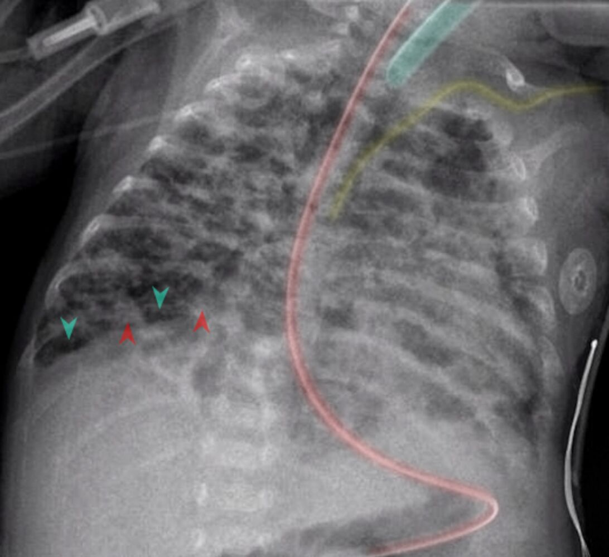

新生兒呼吸相關疾病
2025年2月13日
下午 03:44
 相關條目：
相關條目：
- 小兒ECMO：
- 適應症：
- 胎便吸入症候群
- 呼吸窘迫症候群(respiratory distress syndrome)
- 新生兒持續性肺動脈高壓(persistent pulmonary hypertension of newborn, PPHN)
- 敗血症
- 先天性橫膈疝氣(congenital diaphragmatic hernia)
- 禁忌症：
- 顱內出血風險高而嚴重早產的寶寶(severe prematlirity due to a high risk of intracranial bleeding)
- 體重<2kg
- 顱內出血(grade II 腦室內出血)
- 不可逆肺部疾病(先天性肺泡發育不良)
- 呼吸窘迫症候群(Respiratory distress syndrome, RDS)
- 定義：由於表面張力素(surfactant)缺乏或不足造成的疾病
- 病因：
- 通常為早產兒的原發疾病
- 次發性表面張力素的缺乏：胎便吸入症候群、肺炎、肺出血、敗血症
- 流行病學:
- 好發於早產兒，發生率與懷孕週數成反比(同Apnea)
- 出生時懷孕週數低於30週：發生率60%
- 出生時懷孕週數為39週：發生率幾乎為0%
- Risk factor：
- 早產(最重要因素)
- 糖尿病、懷孕期間營養不良
- 剖腹產
- 男嬰
- 病生理學：第二型肺泡細胞分泌肺泡張力素不足→肺部膨脹不全→出生時呼吸窘迫
- 臨床表現：
- 出生時或出生後6小時內發生症狀，隨時間逐漸惡化到24-72小時為高峰
- 若未處理則在出生後第一個48~72小時之內會惡化
- 呼吸過速、吐氣時呻吟(grunting)、肋下及胸骨凹陷、鼻翼搧動
- room air下發紺、四肢水腫
- CXR：
- Low lung volume
- prominent pulmonary vascular markings
- flat diaphragms
- Diffused reticular granular pattern air bronchograms
- 病理表現：hyaline membrane disease(HMD)
- 玻璃樣變性的膜狀構造(hyaline membrane)、塌陷肺泡
- 評估:
- 產前評估:
- Lecithin-sphingomyelin(L/S)ratio：
- 當L/Sratio>2：28~32週出生的新生兒發生RDS機率小於5%
- 母親為糖尿病患者的新生兒為例外
- Desaturated phosphatidylcholine(DSPC) concentration：
- DSPC濃度>500mg/dL：肺部未成熟機率低於1%
- 母親為糖尿病患者：L/S ratio、DSPC濃度評估要求標準較高(L/Sratio>3·5,DSPC濃度>1,000ug/dL)
- 出生時評估:
- Hypoxemia、動脈血氧分壓低於50mmHg、給予FiO2>50%的氧氣仍然無法使Pa02>80mmHg
- Shake test：
- 取0.5ml胃抽取物、與0.5ml純酒精放入試管混合並搖晃15分鐘
- 搖晃後混合物出現穩定泡沫表示有表面張力素出現
- 陰性或是+1：發生RDS機會約60%
- +2以上則可能性為5%
- Phosphatidylglycerol(PG)
- 併發症：
- 支氣管肺發育不良(bronchopulmonary dysplsia)
- 定義：NRDS長期機械通氣、O2 therapy繼發的慢性肺部疾病
- 病因：肺氣壓傷、氧中毒，由於肺部通氣不成熟(通氣時間超過28天)，隨後導致肺組織發炎
- 臨床特徵
- 見於32 週以下的嬰兒
- 與RDS 相似的症狀持續存在
- Desaturation
- 診斷：
- CXR：瀰漫性、細小、顆粒狀密度，肺部不張區域散佈著過度充氣區域
- ABG：呼吸性與代謝性酸中毒
- 治療：控制O2 supply、利尿劑
- 
- O2治療的併發症：retinopathy of prematurity、bronchopulmonary dysplasia、intraventricular hemorrhage
- 治療：
- 促進肺部發育：產前24小時到七天前給予betamethasone、dexamethasone
- 可降低RDS風險(約可降低60%)、新生兒的死亡(約40%)
- 氣管內插管後給予肺泡表面張力素治療
- 出生8小時內使用第一劑，且出生時仍有胎兒肺液體時效果最好)
- 呼吸治療：
- 治療目標：permissive hypercapnia(>60-70 mmHg)、避免hyperoxia(91-95%)
- 維持適當通氣避免肺泡塌陷
- 盡早用正壓呼吸器、嚴重呼吸衰竭考慮插管
- 新生兒暫時性呼吸急促(Transient tachypnea of the newborn, TTNB)
=濕肺疾病(wet lung disease)=新生兒體液滯留症候群(newborn retained fluid syndrome)
- 定義：
- 胎兒肺部體液延後清除，造成新生兒出生後立即發生呼吸急促的現象
- 為一自限性疾病，通常24小時內可以完全恢復
- 診斷：排除性診斷
- 流行病學:
- 選擇性剖腹產
- 週產期窒息(perinatal asphyxia)
- 臍帶脫垂
- 早產
- 母親氣喘、糖尿病
- 臨床表現:
- 出生後立即性呼吸窘迫(peaceful tachypnea)，呼吸速率甚至可達到100~120/min
- 鼻翼搧動、呼吸時呻吟(grunting)
- 發紺，給予氧氣後可以改善
- CXR：
- Hyperinflation
- 從hilar延伸出明顯的vascular marking
- 肺葉小裂有fluid(fluid in the fissures)
- 輕微的心臟擴大(mild cardiomegaly)
- 治療：
- O2 supply：確保SpO2 ≧ 95%
- 監測心跳速率、呼吸速率、血壓、血氧飽和度
- 維持性靜脈輸液給予直到病人症狀減緩
- 輸液上限60mL/kg/day，以避免呼吸窘迫的加重
- 保持嬰兒溫暖
- 早產兒呼吸暫停(Apnea of prematurity)
- 定義：
- 一般狀態：停止呼吸>15秒
- 嚴重的呼吸暫停(severe apnea)：停止呼吸>20秒或低於20秒但同時有發紺與心搏過慢
- 流行病學：
- 早產兒發生呼吸暫停機率通常與母親懷孕週數成反比(同RDS)
- 種類：可分為obstructive、central與mixed三種
- Obstructive apnea：
- 有胸壁的起伏但氣道沒有氣體的流動
- 胸壁呈現吸氣時咽部氣道發生塌陷
- Central apnea：
- 中樞神經對呼吸相關肌肉刺激減少
- 沒有氣體流動與胸部起伏，但呼吸道沒有阻塞的證據
- Mixed apnea：(最常見，50~75%)
- 阻塞型與中樞型混合
- 通常阻塞型在中樞型前發生
- 臨床表現：
- 足月新生兒：很少會在出生第一天發生apnea，若有通常表示有其它潛在性疾病
- 早產兒：通常發生在出生後第2~7天
- 合併心搏過慢(開始發生在呼吸暫停後1~2秒)、血氧低下
- 呼吸暫停越久，發生心搏過慢機會大幅增加且低血氧情形越嚴重
- 治療：
- 輕微、moderate：表面皮膚刺激便可以讓病童再度呼吸
- 嚴重：給予氧氣、CPAP(continuous positive airway pressure)外
- 發生呼吸暫停但沒有precipitating identifiable cause：可給theophylline或caffeine治療
- 新生兒持續性肺高壓(Persistent pulmonary hypertension of neonate, PPHN)
- 流行病學：
- 好發足月、過月產的嬰兒
- 病因：通常為idiopathic
- Risk factor：
- 出生時窒息(birth asphyxia)
- 胎便吸入性肺炎
- 早期發生的敗血症(early-onset sepsis，e.g. GBS pneumonia)
- 低血糖
- 紅血球增多症(polycythemia)
- 母親在懷孕過程中使用NSAID造成動脈導管收縮
- 羊水過少(Potter syndrome)
- 母親有糖尿病、先天性橫膈疝氣造成肺部發育不良等
- 病生理：胎兒時期肺血管阻力提高、從肺到全身的血液分流(卵圓孔或動脈導管)產生的低血氧造成
- 臨床表現：
- 常於出生後12小時內發生症狀
- 發紺、呼吸窘迫、呼吸過速、呻吟(grunting)、低血壓、酸血症、末梢循環不良
- 診斷：
- 心臟超音波：心房中膈凸向左心房、通過卵圓孔或動脈導管的右向左分流、三尖瓣逆流(可評估肺高壓的程度)
- 血液培養:排除感染與敗血症
- CXR：診斷胎便吸入症候群、肺炎、先天性橫膈疝氣等
- 高氧測試(hyperoxiatest)：使用FiO2 100%氧氣5~10分鐘
- Pa02>100mmHg者較可能是肺部疾病
- Pa02增加若小於20mmHg則比較懷疑是PPHN
- 高度換氣-高氧測試(hyperventilation-hyperoxiatest)：Fi02 100%氧氣+過度換氣狀況下(100~150/min)
- PaC02 25mmHg才能使pa02上升者
- 治療：
- O2 supply：維持病人PaO2 50~90mmHg
- 維持適當的組織氧合狀態
- 同時避免高氧的傷害與高二氧化碳造成肺部血管阻力
- NO吸入治療：藉由NO放鬆血管平滑肌特性調整血管張力
- 提高組織氧合、降低使用ECMO的機率
- 酸血症的矯正：矯正酸血症以減少血管阻力
- 表面張力素(Surfactant)：RDS、肺炎、敗血症、胎便吸入症候群可以考慮使用
- 體外心肺循環(ECMO)：當以上治療方是失敗時使用
- 胎便吸入症候群(meconium aspiration syndrome, MAS)
- 流行病學：
- 羊水胎便染色(meconium-stained amniotic fluid, MSAF)發生率：總生產10-15%
- 其中僅5%出現胎便吸入症候群(MAS)
- 造成足月、過熟(post-term)新生兒呼吸窘迫的常見原因之一
- 病生理：
- 胎便通常於懷孕34週後排出
- 子宮內環境變差、產生fetal distress、妊娠時間過久，便可能排出濃稠的胎便在羊水→在子宮內、生產過程吸入肺內→呼吸道阻塞、發炎→V/Q mismatch、呼吸窘迫、肺內壓力上升→新生兒持續性肺高壓(PPTN)
- 臨床表現：
- 患者出生時指甲、皮膚、臍帶常呈黃褐色的胎便染色
- 症狀通常發生在出生後不久(數小時內)，臨床表現嚴重度差異性大
- 呼吸道阻塞、肺內發炎→低血氧、酸血症
- →部分阻塞→ball-valve effect→氣胸、氣縱膈腔
- 1hr內呼吸窘迫、呼吸快、發紺
- 30%需要呼吸器、ECMO，死亡率約3-5%
- 一般在72小時內症狀會逐漸改善，但也可能併發氣胸或新生兒持續性肺高壓(PPTN)
- CXR：典型變化
- 胸部出現結節性的浸潤(nodular infiltration)
- 肺部氣體分布不均匀
- 嚴重者可能併發氣胸或縱膈腔積氣
- 處理：STAT 氣管內插管及抽吸氣管內胎便(endotracheal suction)
- 適應症：胎便染色濃、嬰兒出生有呼吸窘迫、心跳慢、活動力差